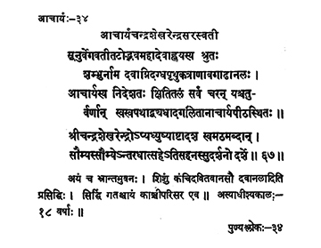

34. आचार्य - 34 - आचार्यचन्द्रशेखरेन्द्रसरस्वती
सूनुर्वेगवतीतटो ••• पीठोस्थितः ॥ ६६ ॥
श्रीचन्द्रशेखर ••• सुदर्शनो दर्शे ॥ ६७ ॥
अस्याधीश्यकालः ••• काञ्चीपरिसर एव ॥
The preceptor, son of Mahādeva, who lived on the banks of river Vegavati, known by Lord Śiva's name, who entered into the dense forest fire to save the child, wandered through out the earth by the directions of his master and adorning the pīṭha and made the four castes to adhere to their respective paths.
The pleasing, elegant and enduring preceptor Sri Candraśekarendra also having remained in his maṭha for eighteen years disappeared on the new moon day of the month of Mārgaśīrṣa in the year Saumya.
His preceptor-ship was for eighteen years.
